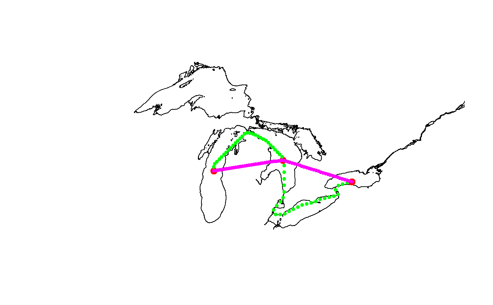

interpolate_path.RdInterpolate new positions within a spatiotemporal path data set (e.g., detections of tagged fish) at regularly-spaced time intervals using linear or non-linear interpolation.
interpolate_path(det, trans = NULL, int_time_stamp = 86400, lnl_thresh = 0.9)
| det | An object of class |
|---|---|
| trans | An optional transition matrix with the "cost" of
moving across each cell within the map extent. Must be of class
|
| int_time_stamp | The time step size (in seconds) of interpolated positions. Default is 86400 (one day). |
| lnl_thresh | A numeric threshold for determining if linear or non-linear interpolation shortest path will be used. |
A dataframe with animal_id, bin_timestamp, latitude, longitude, and record_type.
Non-linear interpolation uses the gdistance package
to find the shortest pathway between two locations (i.e.,
receivers) that avoid 'impossible' movements (e.g., over land for
fish). The shortest non-linear path between two locations is
calculated using a transition matrix layer that represents the
'cost' of an animal moving between adjacent grid cells. The
transition matrix layer (see gdistance) is created from
a polygon shapefile using make_transition or from a
RasterLayer object using transition. In
make_transition, each cell in the output transition layer
is coded as water (1) or land (0) to represent possible (1) and
impossible (0) movement paths.
Linear interpolation is used for all points when
trans is not supplied. When trans is supplied,
then interpolation method is determined for each pair of
sequential observed detections. For example, linear interpolation
will be used if the two geographical positions are exactly the
same and when the ratio (linear distance:non-linear distance)
between two positions is less than lnl_thresh. Non-linear
interpolation will be used when ratio is greater than
lnl_thresh. When the ratio of linear distance to
non-linear distance is greater than lnl_thresh, then the
distance of the non-linear path needed to avoid land is greater
than the linear path that crosses land. lnl_thresh can be
used to control whether non-linear or linear interpolation is
used for all points. For example, non-linear interpolation will
be used for all points when lnl_thresh > 1 and linear
interpolation will be used for all points when lnl_thresh
= 0.
#-------------------------------------------------- # EXAMPLE #1 - simple interpolate among lakes library(sp) #for loading greatLakesPoly because spatial object # get polygon of the Great Lakes data(greatLakesPoly) #glatos example data; a SpatialPolygonsDataFrame plot(greatLakesPoly, xlim = c(-92, -76))# make sample detections data frame pos <- data.frame( animal_id=1, deploy_long=c(-87,-82.5, -78), deploy_lat=c(44, 44.5, 43.5), detection_timestamp_utc=as.POSIXct(c("2000-01-01 00:00", "2000-02-01 00:00", "2000-03-01 00:00"), tz = "UTC")) #add to plot points(deploy_lat ~ deploy_long, data = pos, pch = 20, cex = 2, col = 'red')#> [1] 61#> [1] 58#add linear path to plot points(latitude ~ longitude, data = path1, pch = 20, cex = 0.8, col = 'blue')# load a transition matrix of Great Lakes # NOTE: This is a LOW RESOLUTION TransitionLayer suitable only for # coarse/large scale interpolation only. Most realistic uses # will need to create a TransitionLayer; see ?make_transition. data(greatLakesTrLayer) #glatos example data; a TransitionLayer # interpolate path using non-linear method (requires 'trans') path2 <- interpolate_path(pos, trans = greatLakesTrLayer)#>#> | | | 0% | |=================================== | 50% | |======================================================================| 100%#> #>#> | | | 0% | |=================================== | 50% | |======================================================================| 100%#> #># add non-linear path to plot points(latitude ~ longitude, data = path2, pch = 20, cex = 1, col = 'green')# can also force linear-interpolation with lnlThresh = 0 path3 <- interpolate_path(pos, trans = greatLakesTrLayer, lnl_thresh = 0) # add new linear path to plot points(latitude ~ longitude, data = path3, pch = 20, cex = 1, col = 'magenta')#-------------------------------------------------- # EXAMPLE #2 - walleye in western Lake Erie# NOT RUN { library(sp) #for loading greatLakesPoly library(raster) #for raster manipulation (e.g., crop) # get example walleye detection data det_file <- system.file("extdata", "walleye_detections.csv", package = "glatos") det <- read_glatos_detections(det_file) # take a look head(det) # extract one fish and subset date det <- det[det$animal_id == 22 & det$detection_timestamp_utc > as.POSIXct("2012-04-08") & det$detection_timestamp_utc < as.POSIXct("2013-04-15") , ] # get polygon of the Great Lakes data(greatLakesPoly) #glatos example data; a SpatialPolygonsDataFrame # crop polygon to western Lake Erie maumee <- crop(greatLakesPoly, extent(-83.7, -82.5, 41.3, 42.4)) plot(maumee, col = "grey") points(deploy_lat ~ deploy_long, data = det, pch = 20, col = "red", xlim = c(-83.7, -80)) #make transition layer object # Note: using make_transition2 here for simplicity, but # make_transition is generally preferred for real application # if your system can run it see ?make_transition tran <- make_transition(maumee, res = c(0.1, 0.1)) plot(tran$rast, xlim = c(-83.7, -82.0), ylim = c(41.3, 42.7)) plot(maumee, add = TRUE) # not high enough resolution- bump up resolution tran1 <- make_transition(maumee, res = c(0.001, 0.001)) # plot to check resolution- much better plot(tran1$rast, xlim = c(-83.7, -82.0), ylim = c(41.3, 42.7)) plot(maumee, add = TRUE) # add fish detections to make sure they are "on the map" # plot unique values only for simplicity foo <- unique(det[, c("deploy_lat", "deploy_long")]) points(foo$deploy_long, foo$deploy_lat, pch = 20, col = "red") # call with "transition matrix" (non-linear interpolation), other options # note that it is quite a bit slower due than linear interpolation pos2 <- interpolate_path(det, trans = tran1$transition) plot(maumee, col = "grey") points(latitude ~ longitude, data = pos2, pch=20, col='red', cex=0.5) # }